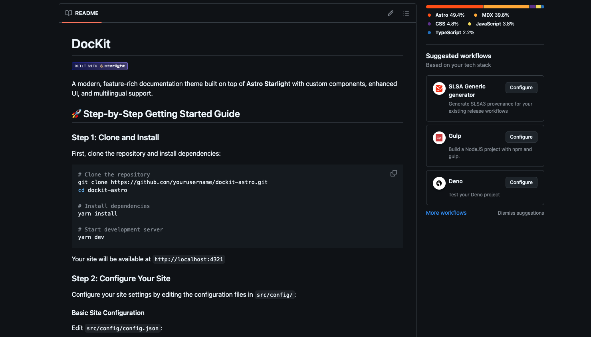
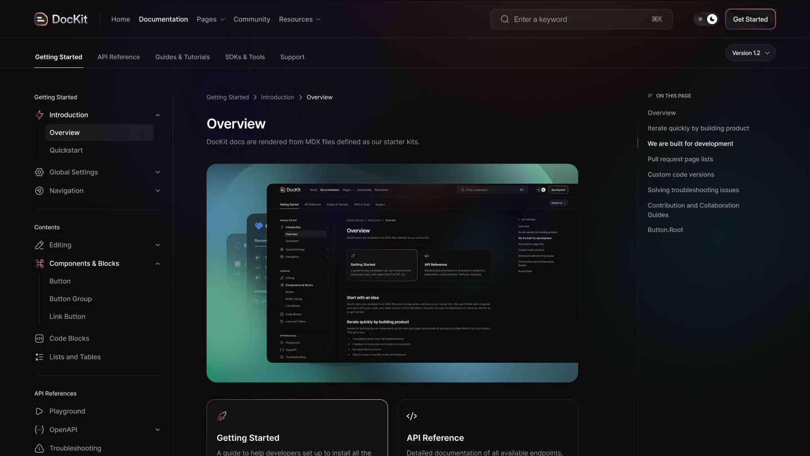
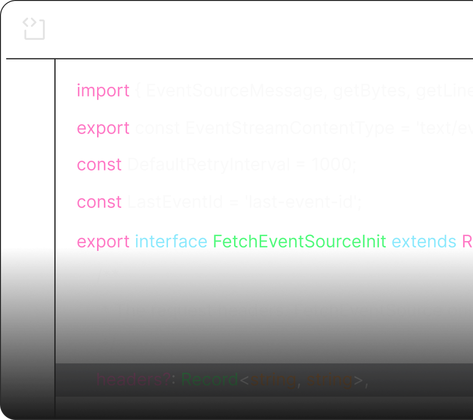
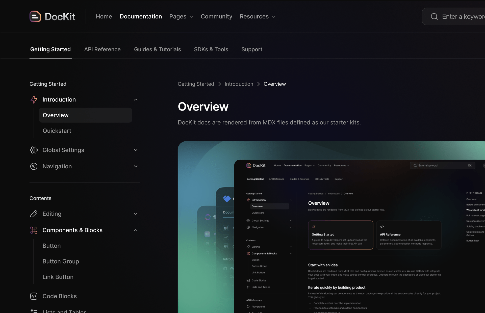
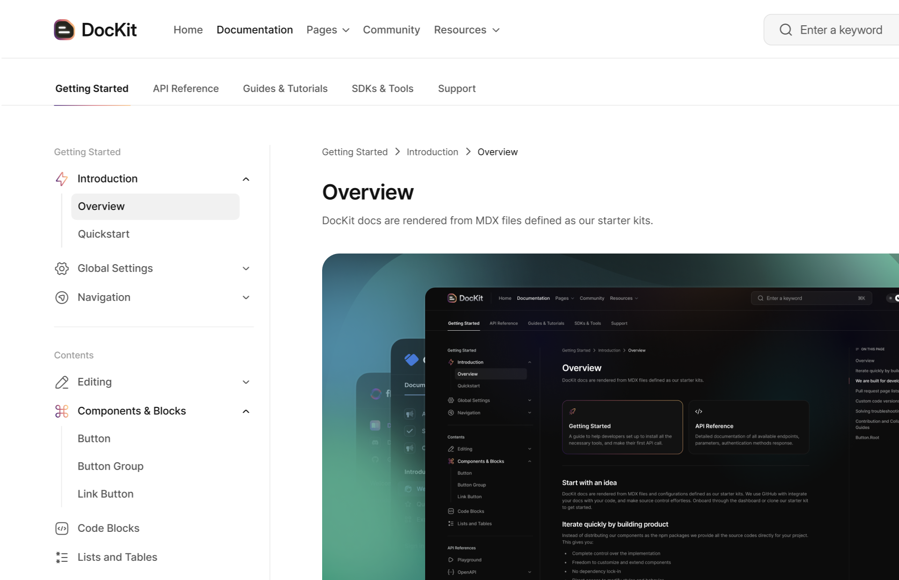

Bien organisée
La transparence de nos données vous aidera à prendre les décisions éclairées dont vous avez besoin.
Découvrez des conseils, des ressources et des guides pour maximiser votre expérience avec DocKit.
Populaire :
Explorez les outils et les choix de conception qui rendent la documentation efficace.
La transparence de nos données vous aidera à prendre les décisions éclairées dont vous avez besoin.
Notre optimisation des performances garantit des temps de chargement rapides et une expérience fluide.
Notre moteur de recherche aide les utilisateurs à trouver l'information rapidement et facilement.
Adaptez la documentation à votre marque et aux besoins de votre projet en toute simplicité.
Une façon rapide et sans frustration de configurer et de démarrer votre documentation.



Explorez nos sujets en vedette et découvrez l'étendue de nos capacités.

Un bouton dédié pour basculer entre le mode sombre et le mode clair.


Obtenez des réponses aux questions les plus fréquemment posées.
Installez simplement notre modèle, importez les composants dont vous avez besoin et commencez à documenter votre projet. La configuration ne prend que quelques minutes.
Cette version statique ne nécessite rien d'autre qu'un navigateur web moderne — pas de Node.js, pas d'étape de compilation. Le thème Astro d'origine demande Node.js 18+ et fonctionne sur tous les systèmes d'exploitation.
Oui, Dockit est entièrement gratuit et open source. Vous pouvez l'utiliser pour des projets personnels et commerciaux sans aucune limitation.
Absolument ! Toutes les couleurs, polices et espacements sont définis dans des variables CSS en tête du fichier css/base.css. Modifiez quelques valeurs et tout le site se met à jour — aucune connaissance d'un framework n'est requise.
Ouvrez css/base.css et modifiez les propriétés personnalisées dans :root (thème sombre) et [data-theme="light"] (thème clair). La couleur primaire, les dégradés et les fonds y sont tous documentés.
Oui. Tous les composants sont en HTML + CSS pur : copiez un bloc existant (cartes, accordéons, onglets…) depuis css/components.css et le code de la page d'accueil, puis adaptez-le à vos besoins.
Les menus sont écrits directement dans le HTML de chaque page (<nav> de l'en-tête et pied de page). Ajoutez, supprimez ou réordonnez les éléments <li> — aucun fichier de configuration n'est nécessaire.
Oui — le site est 100 % statique : téléversez le dossier sur n'importe quel hébergement (Netlify, Vercel, GitHub Pages, OVH, un simple serveur FTP…) et faites pointer votre domaine personnalisé dessus.
Vous pouvez obtenir de l'aide via les discussions GitHub, la documentation elle-même ou le serveur Discord de la communauté. Un support par e-mail est également disponible pour les problèmes complexes.
Merci de signaler les bugs via la page « issues » de GitHub, avec une description détaillée du problème et les étapes pour le reproduire.
Bien que Dockit soit gratuit, des services de conseil premium sont proposés pour les implémentations sur mesure et les déploiements d'entreprise.
Découvrez des conseils, des ressources et des guides pour maximiser votre expérience avec notre documentation.